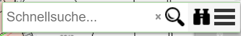
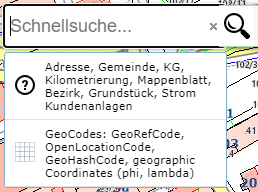
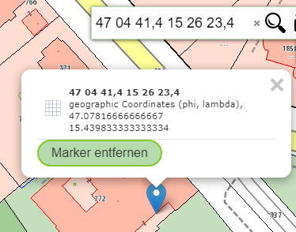
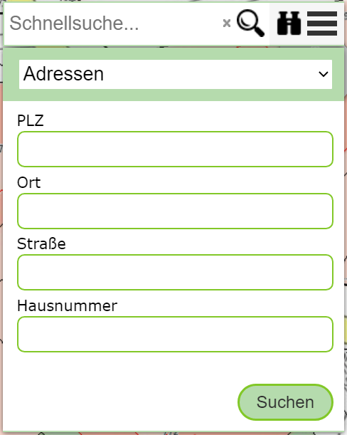

Suche¶
Für die Suche von Geo-Objekten stehen zwei Möglichkeiten zur Auswahl:
Schnellsuche: Suche nach Objekten durch Eingabe von Suchbegriffen in ein Eingabefeld. Durch die eingegeben Begriffe wird das Ergebnis immer mehr eingegrenzt.
Detailsuche: In einem Suchformular wird ein Thema ausgewählt und dafür Eingabefelder für definierte Suchbegriffe angeboten
Beide Methoden sind über das Such-Werkzeug (in der Regel im Kartenviewer rechts oben) erreichbar. Die Detailsuche öffnet sich durch einen Klick auf das Fernglas Symbol
Schnellsuche¶
Wie der Name schon vermuten lässt, bietet die Schnellsuche eine einfache, schnelle und komfortable Möglichkeit Geo-Objekte zu finden. Das Verhalten ist hier ähnlich wie bei gängigen Suchmaschinen, nach der Eingabe von wenigen Zeichen erscheine die ersten Vorschläge, die dann nach Eingabe von immer mehr Suchbegriffen immer weiter eingeschränkt werden. Die Suchbegriffe werden mit einem Leerzeichen voneinander getrennt. Ein Reihenfolge, wie die Begriffe eingegeben werden ist in der Regel nicht relevant für das Ergebnis.
Bemerkung
Nicht alle Themen können über die Schnellsuche gefunden werden. Für die performante Suche müssen Themen in einem speziellen Suchindex übernommen werden. Es obliegt dem Administrator/Kartenautor welche Themenebenen in diesen Suchindex übernommen werden. In der Regel sind dies Themen, nach den häufig gesucht wird, zB Adressen, Orte, Grundstücke, …
Klickt man nur in das Eingabefeld (ohne ein Zeichen zu tippen) erscheint ein Vorschlag Feld in dem die möglichen Themen im Schnellsuchindex aufgelistet sind:
Klickt man auf diesen Vorschlag, öffnet sich ein Dialog mit einer weiteren Beschreibung der Themen bzw. Eingabebeispielen.
Bemerkung
Diese Option wird nur angeboten, den der verwendete Suchindex „Meta“ Informationen anbietet.
Tippt man beispielsweise für eine Adresse einige Zeichen/Begriffe ein, erscheinen in Echtzeit Vorschläge. Dabei werden nicht alle, sondern du die am besten passenden Vorschläge angezeigt. Ist der gewünschte Vorschlag nicht in der Liste, müssen in der Regel weitere Suchbegriffe eingegeben werden. Ist der gewünschte Vorschlag in der Liste, kann er durch ein Klick ausgewählt werden. Der Kartenviewer ändert den Kartenausschnitt und die Sachdaten für das gefunden Geo-Objekt werden angezeigt.
Werden mehrere Vorschläge angezeigt, kann man mit überstreichen (keine klicken) dieser Vorschläge mit der Maus, den Kartenviewer dazu bewegen, den Kartenausschnitt entsprechend zu ändern.
Das gleich Verhalten, kann auch mit den Cursor Tasten (nach oben/unten) erreicht werden.
Möchte man alle Ergebnisse in der Karte anzeigen, die zu den eingegeben Suchbegriffen passen, erfolgt das durch einen Klick auf das Lupen Symbol rechts im Eingabefeld.
Koordinateneingabe
Neben Suchgebriffen könne in das Schnellsuche Feld auch geographische Koordinaten und GeoCodes (Google Plus Codes, Geo Hash Codes) eingeben werden. Klickt ohne Eingabe eines Suchbegriffs in das Suchfeld wird ein Vorschlag für die Koordinateneingabe angezeigt. Ein Klick auf dieses Feld öffnet ein Fenster zu weiteren Informationen und Vorschläge für die Eingabe.
Wird eine gültige Koordinate oder ein GeoCode eingeben, wird dies erkannt und aus entsprechender Verschlag aufgelistet. Klickt man auf diesen Vorschlag springt der Kartenviewer aur den entsprechenden Ausschnitt. Die Größte des Ausschnittes hängt von der Genauigkeit der eingeben Koordinate ab (mehr Kommastellen => kleiner Kartenausschnitt):
Detailsuche¶
Das Formular für die Detailsuche wird über Fernglas Symbol im Suchbereich des Kartenviewers geöffnet:
Im Gegensatz zur Schnellsuche muss sich der Anwender hier vorab entscheiden, in welchem Thema gesucht werden sollte. Dafür werden für jedes Thema entsprechende Eingabeformulare angeboten. Die Eingabefelder liefern nach Eingabe teilweise einiger Zeichen Auswahllisten. In der Regel müssen nicht alle Felder ausgefüllt, jedoch kann das Ergebnis weiter eingeschränkt werden, wenn mehr Suchbegriffe angeführt werden.
Nach dem Eingeben der Suchbegriffe kann auf den Suchen Button geklickt werden. Werden Ergebnisse gefunden, wird der Kartenausschnitt entsprechend angepasst und die Ergebnisse angezeigt.